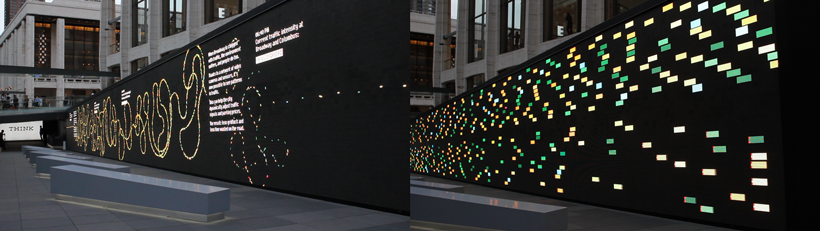
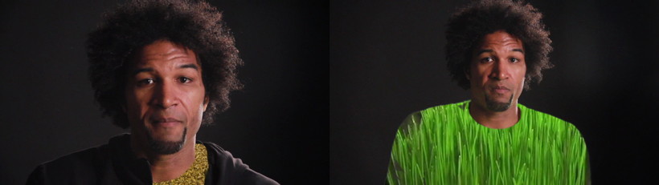
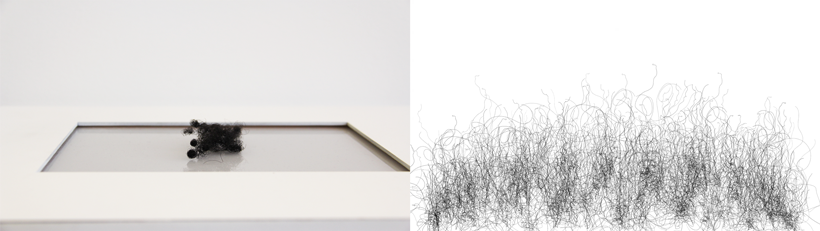

Rhazes Spell
Rhazes Spell is a lecturer of Media Design and Computer Graphics in the School of Design. His background is in data visualization, user experience design and media art. He completed his M.S. and Ph.D. at Duke University in the United States where he studied Biomedical Engineering specializing in computational biology and bioinformatics. After a post-doctoral research fellowship in scientific visualization with the Duke Visualization and Technology Group he worked as a user-experience designer and developer in the entertainment, finance, healthcare and defense and intelligence industries. Most recently he completed a MFA in Design|Media Art at the University of California, Los Angeles in the United States. Rhazes’s interests lie at the intersection of Science, Technology and Society Studies, Software Studies, and Media Art. Software and Technology are constant presences in our lives. They affect us in noticeable and subtle ways shaping our interactions with others, the environment and ourselves. Rhazes is interested in projects that explores these relationships. More formally he is interested in work that explores this space through the deployment of software, computation and creative code for interaction and storytelling.

Think
This is a data narrative piece which was part of a larger exhibition for the IBM THINK exhibit in 2011. The pieces is a data visualization that depicts New York City Traffic. The display was a 38 meter long, 3 meter high LED wall. The visualization has 2 parts. The first part of the simulation takes data from a live traffic feed at the intersection of Broadway and Columbus Avenues. The level of congestion is visualized on the wall as a knot of traffic. The “knottiness” reflects the level of congestion at the intersection. The other part is a simulation of New York traffic that has agents representing busses, trucks, cars, motors, and the ubiquitous New York Taxicabs. Each of the agents have behaviors such as aggression and rudeness that determine how they drive in the simulated traffic.

Veg Life
Veg Life is a video piece that explores the unlikely connection between masculinity and diet. The piece uses minimal post-production effects to convey a twist on the aphorism, “you are what you eat”. This piece is an example of an aspect of Rhazes’s interest in process - appropriation of computational techniques in zany narratives.

My Kinky Side
This is an installation that explores identity encoding through hair. Shown above are stills from a hair sculpture and a generative drawing based on kinky hair. The generative drawing utilized strands of Rhazes’s extracted hair to generate NURBS curves. The knot vectors of the resulting curves where then used to generate kinking and unkinking motion of the hair strands.